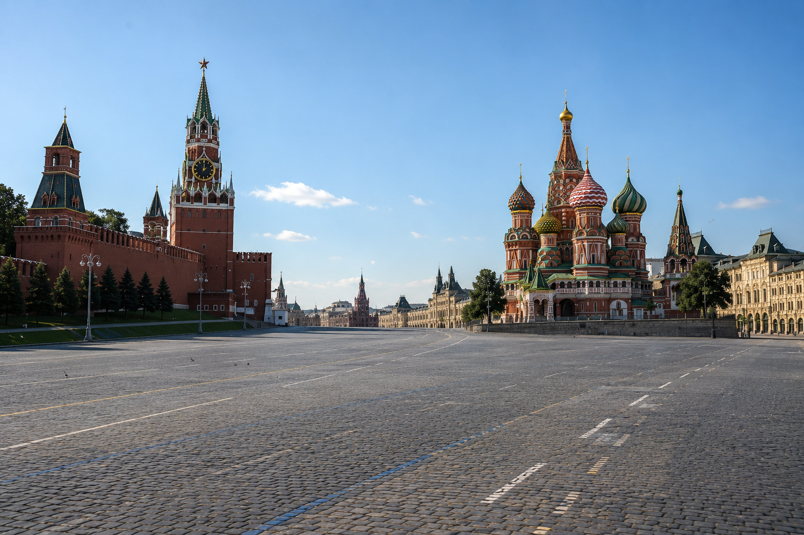
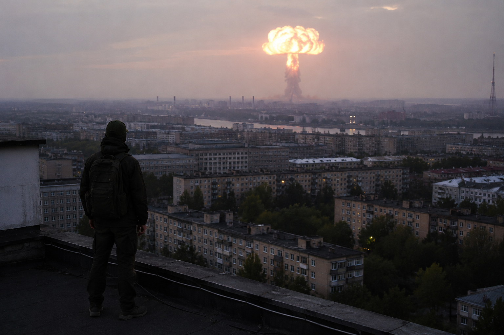
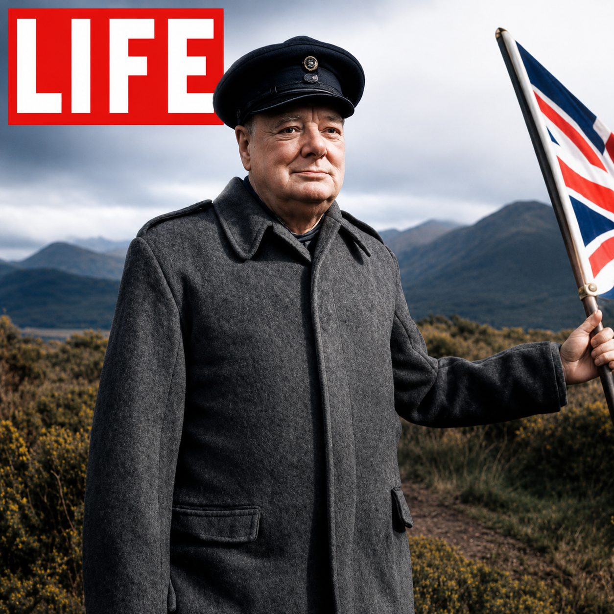
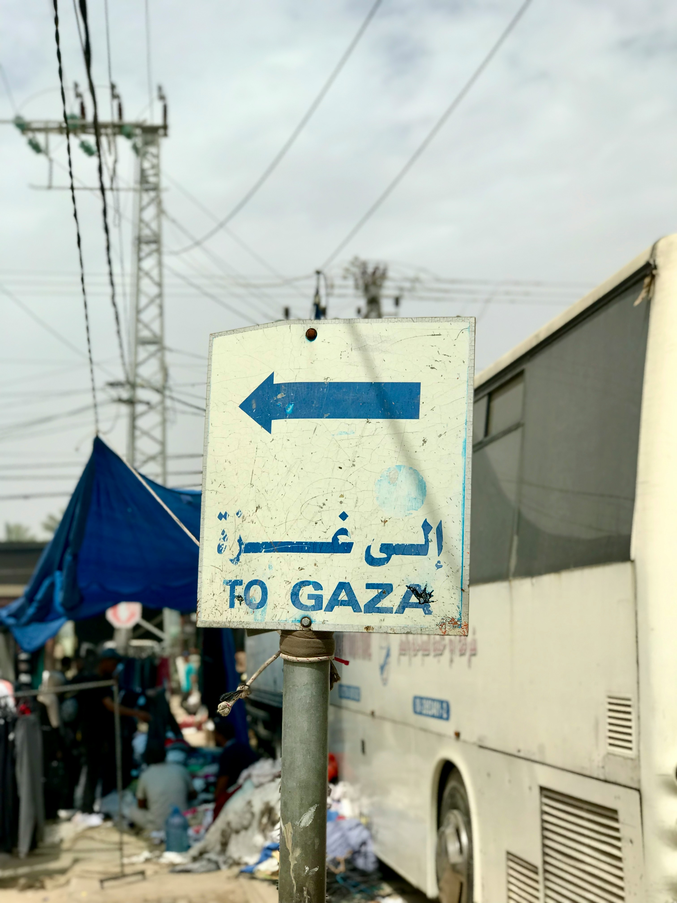
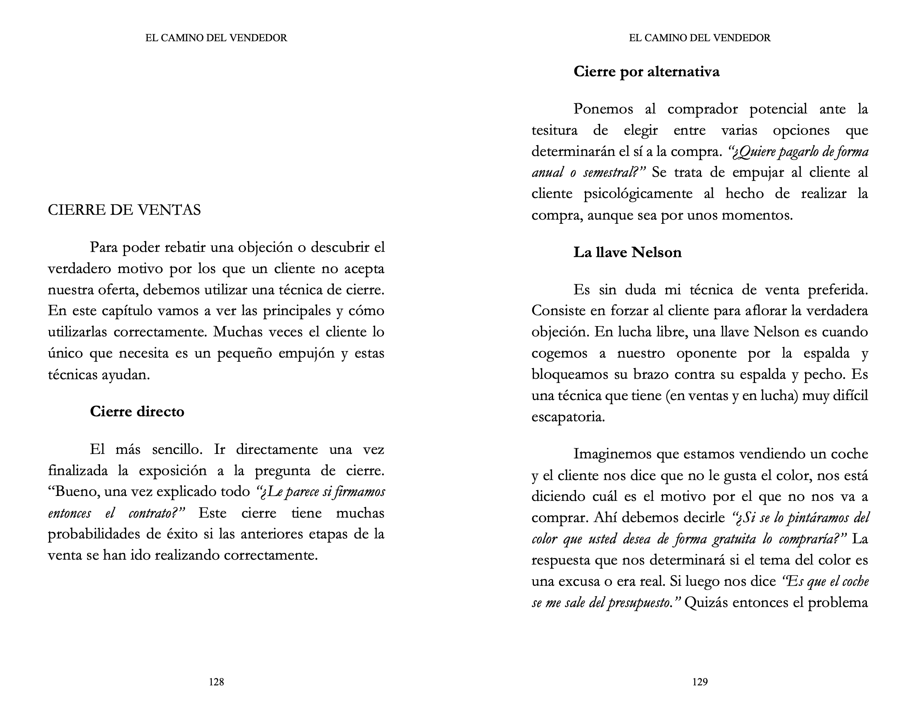
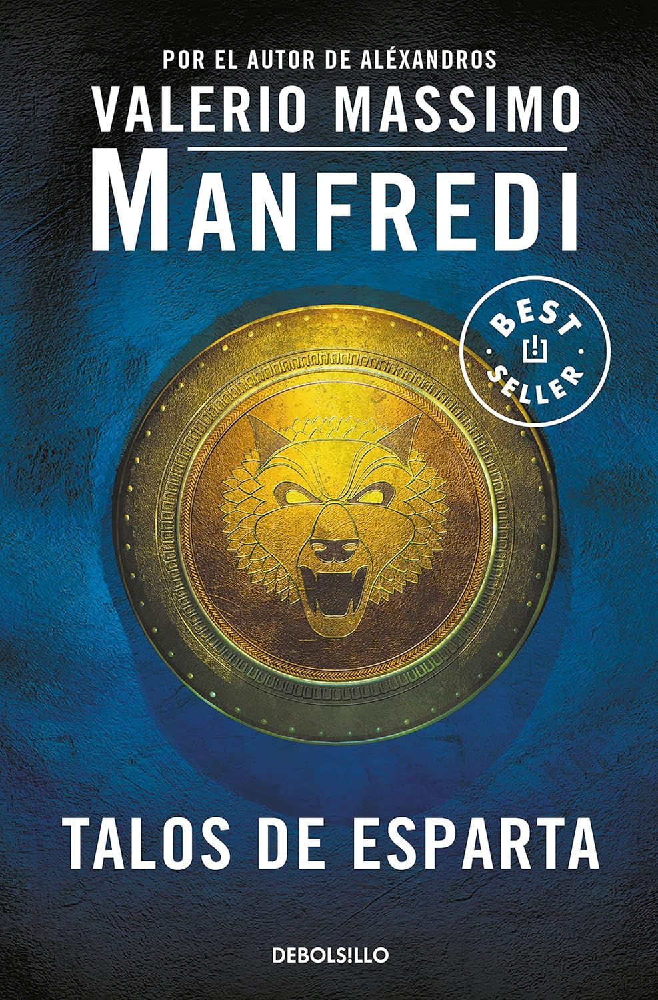
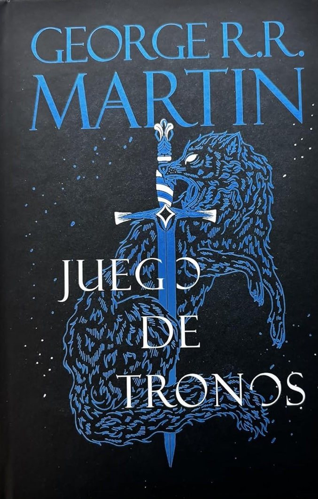
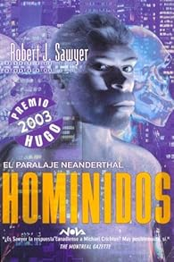
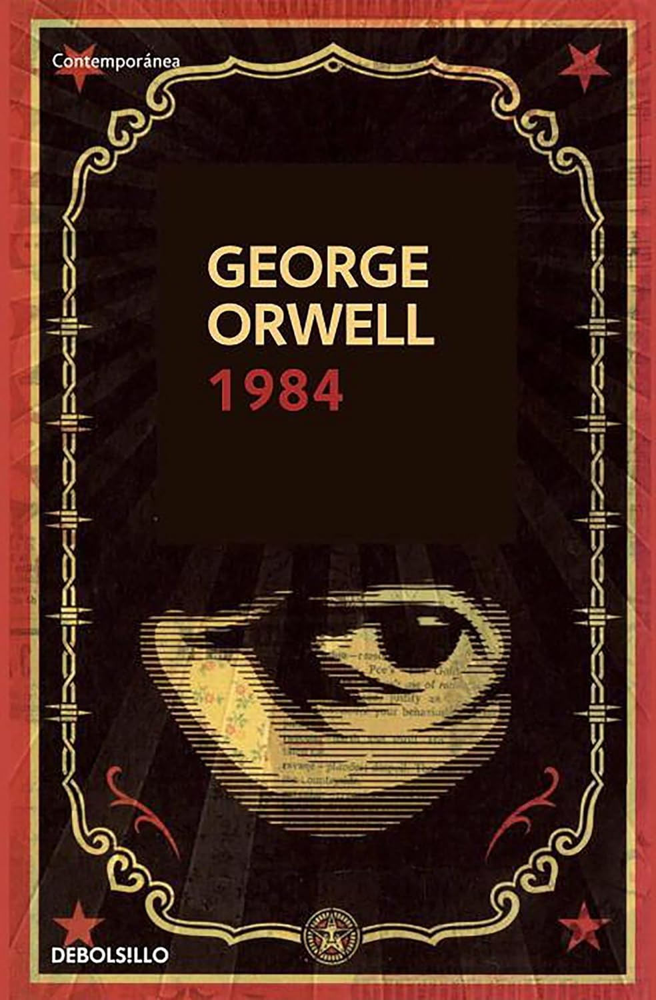

Rusia 03:14
Un thriller de misterio global, narrado con un ritmo tenso y cinematográfico. Una historia de fronteras desiertas, gobiernos al límite y personas comunes enfrentadas a un vacío imposible.
Moisés Corral
Ficción, historia, geopolítica y otros mundos posibles.
Hay sucesos que cambian el mundo... para siempre.

Obras publicadas
Pequeñas historias convertidas en algo mucho más grande.
Un thriller de misterio global, narrado con un ritmo tenso y cinematográfico. Una historia de fronteras desiertas, gobiernos al límite y personas comunes enfrentadas a un vacío imposible.

Una ucronía coherente sobre cómo fue posible la victoria alemana en Europa y cómo ese triunfo alteró por completo el equilibrio mundial.

Una inmersión profunda y detallada en el conflicto entre Israel y Palestina, explorando sus raíces históricas y los eventos más recientes.

Un libro que busca ensalzar la figura del comercial y despertar vocaciones, descubriendo todos los secretos del mundo comercial.

Una edición comentada, vista desde los ojos del siglo XXI, sobre uno de los libros más influyentes de la historia.
Universos
Cada libro tiene su propia atmósfera y un mundo construido alrededor de sus personajes y tramas.








Próximamente
Ideas en desarrollo. Bocetos de mundos que todavía están tomando forma.


Sobre mí
Escribo sobre poder, historia, estrategia y mundos posibles. Me interesan las historias donde una decisión, una estructura o una idea pueden cambiar el destino de una persona, de un país o de una civilización entera.
Langreano a todos los efectos. Desde joven me interesaron la Historia, la economía, el Derecho y los mecanismos que explican cómo se organizan las sociedades, cómo se construye el poder y cómo determinadas decisiones pueden alterar el curso de millones de vidas.
Mi trayectoria profesional me llevó por el asesoramiento financiero, el sector asegurador, la gestión de empresas y la dirección de equipos. Ese recorrido me permitió observar desde dentro cómo funcionan las organizaciones y cómo se comportan las personas cuando entran en juego la presión, la ambición, el miedo o la incertidumbre.
Nunca dejé de escribir. La diferencia es que ahora he decidido hacerlo de forma continua y profesional. Mis libros nacen de la mezcla entre curiosidad, análisis y pasión narrativa: ficción, ensayo, geopolítica, historia alternativa, estrategia y mundos imposibles que podrían sentirse reales.
Nací oficialmente en el Hospital Valle del Nalón, aunque mis padres se encargaron rápidamente de llevarme al día siguiente a Campo la Carrera, en Langreo (Asturias), donde crecí durante toda mi infancia y adolescencia.
Es una aldea muy pequeña, de esas donde las historias pasan de generación en generación y donde uno aprende pronto a observar a las personas, sus formas de pensar y la manera en la que el entorno acaba moldeando la vida de todos. Está situada en lo alto de un pequeño monte llamado el Picu la Cerra, un lugar desde el que probablemente empecé, sin darme cuenta, a mirar el mundo con cierta perspectiva.

Desde muy joven me interesaron especialmente la Historia y la economía. Recuerdo pasar horas escuchando historias sobre el Imperio romano, la Segunda Guerra Mundial o las grandes transformaciones políticas de finales de los años 80 y principios de los 90.
Pero, más allá de los acontecimientos en sí, lo que realmente me fascinaba era entender cómo se organizaban las sociedades, cómo se construía el poder y cómo determinadas decisiones podían cambiar el destino de millones de personas. Creo que esa obsesión por comprender los mecanismos que mueven el mundo termina reflejándose de una forma u otra en todos mis libros.

Desde pequeño tuve claro que quería estudiar Derecho. Me atraía la idea de comprender las normas, las estructuras y los mecanismos que sostienen las sociedades modernas. Sin embargo, durante aquellos años también empecé a sentir una cierta fascinación —y casi envidia— por las matemáticas.
Esa curiosidad me llevó también hacia el mundo de la economía y las finanzas. Gracias a la primera empresa en la que trabajé tuve la oportunidad de cursar un Máster en Finanzas en la Universidad de Deusto, ampliando una formación que acabaría influyendo profundamente tanto en mi vida profesional como en mi manera de entender el mundo.
Mis primeros trabajos estuvieron relacionados con el asesoramiento financiero y posteriormente con el sector asegurador. Más adelante desarrollé mi carrera en el ámbito de la gestión y dirección de empresas, un entorno que me permitió observar desde dentro cómo funcionan realmente las organizaciones, cómo se toman decisiones bajo presión y cómo se comportan las personas cuando entran en juego los intereses, el miedo, la ambición o la incertidumbre.
Con el tiempo descubrí que una de las cosas que más me motivaban era ayudar a las personas a desarrollar su potencial, sacar lo mejor de los equipos que dirigía y aportar soluciones reales a los clientes. Esa parte humana terminó siendo mucho más importante para mí de lo que imaginaba cuando empecé mi carrera profesional.
Hoy, todo ese recorrido me ha llevado al sector sanitario, donde continúo dirigiendo equipos, pero también ayudando cada día a las personas a mejorar su vida.
Nunca dejé de escribir. La diferencia es que ahora he decidido hacerlo de forma continua y profesional.
Primero en un blog personal —por desgracia ya desaparecido— donde hablaba sobre curiosidades históricas, geopolítica y algunos de los temas que me obsesionaban en aquel momento. La escritura siempre estuvo ahí, incluso en épocas donde ocupaba un segundo plano.
Durante años acumulé decenas de ideas, borradores, novelas a medio terminar y pequeñas notas con conceptos para historias futuras. Llegó un momento en el que entendí que, si quería convertirme realmente en escritor, tenía que dejar de “picotear” proyectos y empezar a terminarlos. Por eso decidí imponerme cierta disciplina y obligarme a publicar al menos una obra completa cada año.

Mis libros nacen precisamente de esa mezcla entre curiosidad, análisis y pasión narrativa. Algunas de mis obras se acercan a la geopolítica y la historia contemporánea; otras exploran futuros distópicos, universos alternativos o escenarios imposibles. Aunque las temáticas puedan parecer muy distintas entre sí, todas comparten una misma filosofía: escribir los libros que a mí mismo me habría gustado encontrar como lector.
Me interesan especialmente las historias donde el individuo se enfrenta a estructuras mucho más grandes que él: Estados, sistemas, ideologías, guerras, corporaciones o incluso civilizaciones enteras. Creo que es precisamente ahí donde aparecen las preguntas más interesantes sobre libertad, identidad, poder, supervivencia y naturaleza humana.
A la hora de escribir intento combinar entretenimiento, profundidad y una fuerte sensación de realismo. Me obsesiona la documentación, el detalle y la coherencia interna de cada obra.
Actualmente continúo desarrollando nuevos proyectos relacionados con la ciencia ficción, la historia alternativa, la geopolítica y el ensayo estratégico, siempre con la misma idea con la que empecé a escribir hace años: crear historias y libros capaces de despertar en otros lectores la misma fascinación que yo sentía cuando descubría ciertos temas por primera vez.
Biblioteca personal
Hay libros que no se limitan a entretener. Algunos te cambian la forma de mirar la Historia, el poder, la ciencia, la imaginación y la naturaleza humana. Estos doce forman parte de mi manera de entender la escritura.

La Historia entendida como una cadena de pequeños instantes capaces de cambiar civilizaciones enteras.
Creo que este fue el libro que desarrolló mi pasión por las ucronías, aunque en realidad no trate sobre ellas. Zweig mostraba cómo acontecimientos gigantescos de la Historia podían cambiar por un pequeño detalle, un error o una decisión tomada unos segundos antes o después.

El libro que me hizo obsesionarme con la idea de aplicar matemáticas y lógica al comportamiento humano.
La idea de la psicohistoria, esa visión estadística de la humanidad que décadas después se parecería a lo que hoy llamamos Big Data, me pareció fascinante. Probablemente no existiría El camino del vendedor sin Fundación.

La demostración de que incluso la ciencia más compleja puede contarse de forma fascinante y humana.
Bill Bryson consigue que la física, la química o la biología se vuelvan cercanas sin perder profundidad. Para mí sigue siendo una obra maestra de la divulgación científica.

La novela que convirtió la antigua Esparta en un lugar real, duro y completamente vivo para mí.
La historia de un héroe que no estaba destinado a serlo, unida a la forma en la que Manfredi retrata la cultura espartana, consiguió que aquella civilización dejara de parecer algo lejano.

Una ucronía gigantesca que no cambia solo una guerra, sino dos mil años de Historia.
Roma Eterna muestra cómo habría evolucionado el mundo durante más de dos mil años si el Imperio romano nunca hubiera caído. Esa sensación de continuidad histórica me marcó profundamente.

Un viaje brillante por las ideas, el arte y los cambios que construyeron la civilización occidental.
Un recorrido por filosofía, literatura, arte, música e historia que ayuda a observar cómo Europa se construye intelectualmente delante del lector.

La Roma imperial convertida en una mezcla perfecta de intriga política, tragedia y cotilleo humano.
Una novela prácticamente perfecta: intriga, política, conocimiento, traiciones, humor y personajes inolvidables conviviendo de una manera natural.

La obra que me enseñó cómo construir tensión constante y personajes que nunca están realmente a salvo.
Representa para mí la máxima expresión del cliffhanger y de la tensión narrativa sostenida. Esa sensación de necesitar leer un capítulo más influyó mucho en Rusia 03:14.

Una idea imposible llevada hasta sus últimas consecuencias con una coherencia fascinante.
No plantea simplemente una batalla distinta o un imperio que sobrevive, sino cómo habría sido la civilización si la especie dominante del planeta hubiesen sido los neandertales.

La novela histórica que logró emocionarme como ninguna otra y hacerme sentir el choque entre dos mundos.
Tiene todo lo que me apasiona de la novela histórica: el espíritu de Viriato, la dureza del asedio romano y la visión romana e íbera sin caricaturas.

Una odisea inolvidable sobre conocimiento, religión y convivencia entre culturas en la Edad Media.
Lo que empieza como la historia de un niño huérfano termina siendo un viaje sobre conocimiento, identidad, religión y convivencia entre cristianos, judíos y musulmanes.

El libro que cambia para siempre tu manera de entender el poder, la verdad y el control.
Una novela que modifica la manera de mirar el poder, los gobiernos y la propia idea de verdad. El final me parece devastador e insuperable.
Consultas
Puedes contactar conmigo en el siguiente formulario.